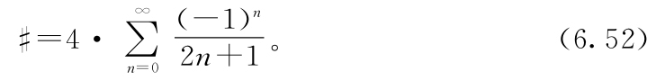

读者：因此#就是4乘以所有奇数的倒数的无穷正负和？
作者：我想是的。
数学：嘿，还有如果n是整数，2n就总是偶数，2n+1总是奇数，因此我们可以这样表述：

作者：太棒了——里面没有平方根之类的东西。我们只用算术就描述了#！原则上我们完全可以自己计算。
读者：我们能喊Al和傻子来了吗？
数学：当然。
（数学又借作者的电话拨了号码。）
数学：Al，听到了吗，你忙吗？……很忙？……你在忙什么？……喔！那太棒了。我很高兴你们俩终于……跟你说，我需要快点。时间很紧。我们知道你处理不了无穷任务，你能不能计算……
（数学对着电话描述了式（6.52）。）
到N等于100，000？
作者：需要多久？
数学：他说大约是3.141 60。
作者：喔！真快。你能再麻烦他一下吗？请他算前100万项。
数学：（过了一会）他说大约是3.141 59。
读者：很好，小数点后前三位似乎已经稳定了，后两位变化也不大。
作者：还有，记得我们在第4章猜#应当是在3附近吗？我想我们猜对了。有了更多证据证明我们的这些论证可能在正确的轨道上。
数学：我不相信我们就做完了。
作者：我知道……这是迄今为止我们做过的最困难的事情。但是我们成功了！我们干掉了#。原来它只不过是
#≈3.141 59。
作者：看到教给我们圆的面积是πr2时隐藏了多少东西吧，还有——
读者：嘿，我想起来了。你在第4章曾说过等我们知道怎么计算它了，我们就开始称它为π。
作者：我说过吗？
（作者翻回到第4章。）
作者：好吧。你是对的。我好像是说过。
数学：π到底是什么？
读者：哦，在课本上，π是——
作者：算了吧。我们还是叫它#。这是我们应得的。
读者：我也这么认为。